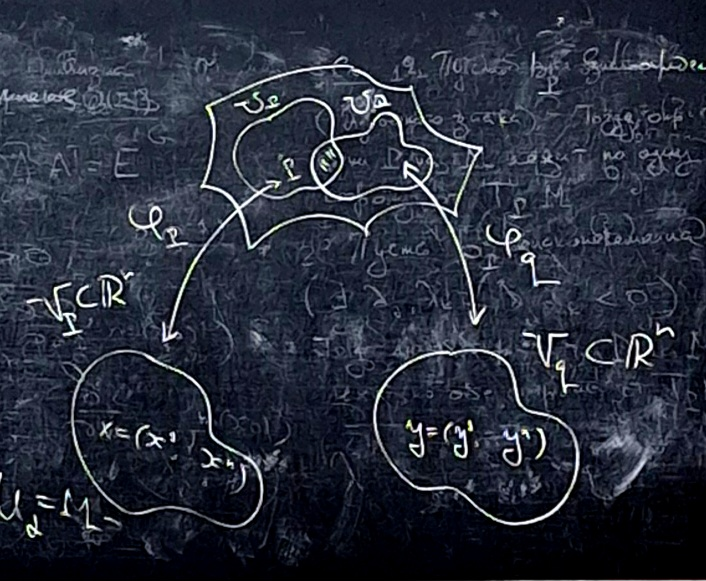

Хотим изучать свойства поверхностей, которые не зависят от того, куда поверхность поместили, поэтому перейдем к более абстрактным объектам.
Пример: маятник описывается окружностью. Повесим на маятник еще один маятник. Тогда положение двойного маятника описывается двумя углами, и возникает вопрос какой объект описывается этими углами (и в данном случае – это тор в трехмерном пространстве), но к этой задаче трехмерное пространство не имеет отношения, поэтому нужна более абстрактная поверхность.
Пример: вращение твердого тела с закрепленной точкой. Рассмотрим декартову систему координат с началом координат в закрепленной точке и другую систему координат с центром в той же точке, но жестко связанную с телом. Теперь надо решить задачу описания движения одной системы относительно другой. \(M = SO(3)\). То есть имеем трехмерное пространство в девятимерном, но нам такое не надо, потому что хочется описывать в пространстве (как оно собственно и есть).
Пример: В общей теории относительности пространство – это пространство-время, кривизна – гравитационное поле, оно же метрика.
Хотим, чтобы наш абстрактный объект удовлетворял основным свойствам поверхностей.
Главные свойства поверхностей: в окрестности каждой точки есть координаты и две системы координат в окрестности одной точки выражаются друг через друга посредством гладких функций.
Нужны окрестности, значит берем топологические пространства.
Определение: \(M\) – топологическое пространство, с условиями:
\(M\) – топологическое \(n\)-мерное многообразие, если \(\forall P \in M \,\,\,\, \exists\) окрестность \(U_P \in \tau_M\) гомеоморфная открытой области в \(\mathbb{R}^n\) (объединение \(n\)-мерных дисков).
Пара \((U_P, \varphi_P: U_P \to V_P \subset \mathbb{R}^n)\), где \(\varphi_P\) – гомеоморфизм, – карта \(M\), \(\varphi_P\) – координатный гомеоморфизм.
Совокупность карт \((U_{\alpha}, \varphi_{\alpha})\), где \(\bigcup_{\alpha}U_{\alpha} = M\), – атлас \(M\).
Замечание: У каждой точки есть окрестность гомеоморфная \(n\)-мерному диску.
Определение: Что происходит с координатами пересечения двух окрестностей с разными картами? Как выражаются координаты друг через друга?

\(U_{PQ} = U_P \cap U_Q\)
\(V_{PQ} = \varphi_P(U_{PQ})\)
\(V_{QP} = \varphi_Q(U_{PQ})\)
Построим отображение: \(\varphi_{PQ}: V_{PQ} \to V_{QP}: \varphi_{Q}\circ \varphi_{P}^{-1}\), которое гомеоморфизм, так как композиция гомеоморфизмов.
\(\varphi_{PQ}\) – функции склейки или фунцкии перехода.
Проблема: при нашем определении непонятно, что такое дифференцируемая функция и, следовательно, что такое гладкость.
Поэтому хотим наделить топологическое многообразие «гладкой структурой».
Определение: Пусть \(M\) – \(n\)-мерное топологическое многообразие и пусть \((U_{\alpha}, \varphi_{\alpha})\) – атлас \(M\).
Атлас гладкий, если все функции \(\varphi_{\alpha}\) (которые обычные функции от \(n\) переменных в евклидовом пространстве) гладкие.
Гладкая структура на многообразии \(M\) – это пара \(M\) и фиксированный гладкий атлас.
Два гладких атласа эквивалентны, если их объединения – это гладкий атлас, то есть функции склейки между картами одного и другого атласа все гладкие.
Теперь переформулируем:
Гладкая структура на \(M\) – класс эквивалентности гладких атласов.
Определение: Гладкое \(n\)-мерное многообразие – это \(n\)-мерное топологическое многообразие с фиксированной гладкой структурой.
Атлас из одной карты.
\(S^1: \,\,\,\, (x^1)^2 + (x^2)^2 = R^2\).
Атлас?
Рассмотрим карты, которые определяются стереографической проекцией. \(U_1 = S^1\setminus N\), где \(N = (0, R)\) северный полюс со стереографической проекцией из \(N\) на прямую, проходящую через южный полюс \(S = (0, -R)\).
\(U_2 = S^1\setminus S\), где \(S = (0, -R)\) южный полюс со стереографической проекцией из \(S\) на прямую, проходящую через северный полюс \(N = (0, -R)\).
Проверим, что атлас гладкий:
\(\varphi_1(U_1\cap U_2) = \mathbb{R}\setminus \{0\}\)
\(\varphi_2(U_1\cap U_2) = \mathbb{R}\setminus \{0\}\)
\(\mathbb{R}\setminus \{0\}\) – открытое.
Функции склейки:
\(y = \frac{4R^2}{x}\) и \(x = \frac{4R^2}{y}\) – бесконечно дифференцируемые, следовательно атлас гладкий.
тоже самое
Определение: Точка проективной плоскости – это класс эквивалентности трехмерных ненулевых векторов по отношению эквивалентности \((x^0, x^1, x^2)\sim (\lambda x^0, \lambda x^1, \lambda x^2), \,\,\,\, \lambda \ne 0\).
Соорудим атлас:
Будет три карты (первая координата отлична от нуля и т.д.)
\(U_1 \subset \mathbb{R}P^2 \,\,\,\, \mathbf{x}: \,\,\,\, x^0 \ne 0\).
и координатный гомеоморфизм \(\varphi_1: (x^0, x^1, x^2)\sim (1, u^1, u^2) \,\,\,\, u^1 = \frac{x^1}{x^0} \,\,\,\, u^2 = \frac{x^2}{x^0}\)
\(U_2 \subset \mathbb{R}P^2 \,\,\,\, \mathbf{x}: \,\,\,\, x^1 \ne 0\).
и координатный гомеоморфизм \(\varphi_2: (x^0, x^1, x^2)\sim (v^1, 1, v^2) \,\,\,\, v^1 = \frac{x^0}{x^1} \,\,\,\, v^2 = \frac{x^2}{x^1}\)
\(U_3 \subset \mathbb{R}P^2 \,\,\,\, \mathbf{x}: \,\,\,\, x^2 \ne 0\).
и координатный гомеоморфизм \(\varphi_3: (x^0, x^1, x^2)\sim (w^1, w^2, 1) \,\,\,\, w^1 = \frac{x^0}{x^2} \,\,\,\, w^2 = \frac{x^1}{x^2}\)
Проверим гладкость атласа:
\(U_1 \cap U_2 = \{\mathbf{x}: \,\,\,\, x^0 \ne 0, \,\,\,\, x^1 \ne 0\}\)
\(\varphi_1(U_1 \cap U_2) = \mathbb{R}^2_{(u^1, u^2)} \cap \{u^1 \ne 0\}\)
\(\varphi_2(U_1 \cap U_2) = \mathbb{R}^2_{(v^1, v^2)} \cap \{v^1 \ne 0\}\)
Функция склейки:
\(v^1 = \frac1{u^1}, \,\,\,\, v^2 = \frac{u^2}{u^1}\) – бесконечно дифференцируемые, следовательно, гладкое многообразие.
Определение: Карта аффинная, если области \(U_P\) – плоскости.
Определение: Проективная плоскость – фактортопология сферы по отношению эквивалентности диаметрально противоположных точек.
Для \(n\)-мерной проективной плоскости тоже самое (это типа дз).
Следующий пример к каком-то смысле для нас самый важный: оставлю его вам в качестве упражнения.
Определение: Пусть \(M\) – гладкое \(n\)-мерное многообразие и \(f: M \to \mathbb{R}\).
Пусть \(P \in M\) и \(U \ni P, \,\,\,\, \varphi: U \to V\),
\(f_{|U} \,\,\,\, \hat{f}_{U}: V \to \mathbb{R}\)
\(\hat{f}(x) := f(\varphi^{-1}(x))\)
\(f\) – гладкая в окрестности точки \(P\), если \(\forall\) карты \(U \ni P\) функция \(\hat{f}(x)\) гладкая в окрестности точки \(\varphi(P)\).
\(f\) – гладкая всюду, если \(f\) гладкая в окрестности каждой точки.
Определение: Пусть \(M^n\) и \(M^m\) \(n\)-мерное и \(m\)-мерное гладкие многообразия.
\(f: M^n \to M^m\)
\(P \in M^n, \,\,\,\, U \ni P, \,\,\,\, \mathbf{x} = (x^1, \ldots, x^n)\)
\(f(P) \in M^m, \,\,\,\, V \ni f(P), \,\,\,\, \mathbf{y} = (y^1, \ldots, y^m)\)
\(f: y^i = f^i(x^1, \ldots, x^m), \,\,\,\, i \in 1, \ldots, n\)
\(f\) – гладкое, если каждое \(f^i(\mathbf{x})\) бесконечно дифференцируемо.
Определение: Пусть \(M^n\) и \(M^m\) \(n\)-мерное и \(m\)-мерное гладкие многообразия.
\(f: M^n \to M^m\) – диффеоморфизм, если \(f\) биекция и \(f, f^{-1}\) гладкие.
Если существует диффеоморфизм многообразий, то многообразия диффеоморфны.